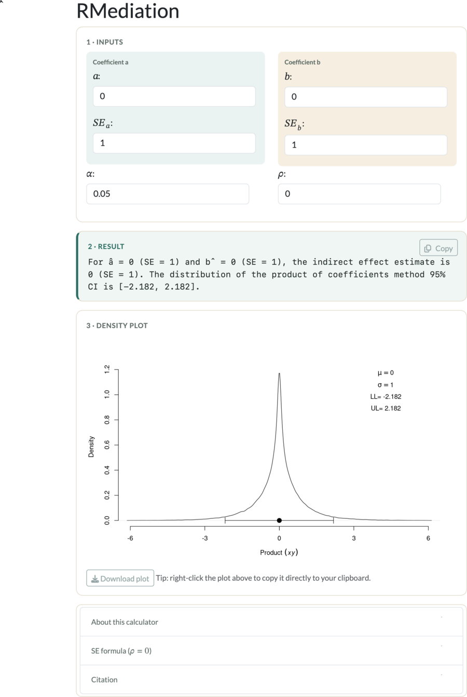

Confidence intervals for a two-coefficient mediated effect (a·b), via the distribution-of-the-product method.
Computes a confidence interval for the mediated effect \(\hat{a} \cdot \hat{b}\) — the product of two normal random variables — using the distribution of the product of coefficients method. Inputs: \(\hat{a}\), \(\hat{b}\), their standard errors \(SE_{\hat{a}}\), \(SE_{\hat{b}}\), significance level \(\alpha\), and the correlation \(\rho\) between \(\hat{a}\) and \(\hat{b}\).

Tofighi, D., & MacKinnon, D. P. (2011). RMediation: An R package for mediation analysis confidence intervals. [PDF] Behavior Research Methods, 43, 692–700.